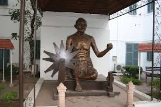
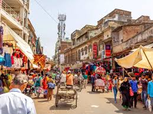
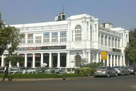
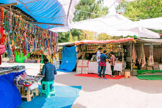
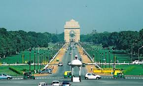

Cities
New Delhi
- India Gate: A war memorial dedicated to Indian soldiers, located in the heart of New Delhi.
- Red Fort: A historic fort and UNESCO World Heritage site, known for its impressive architecture and historical significance.
- Lotus Temple: A stunning Bahá'í House of Worship, famous for its flower-like architectural design.

- Qutub Minar: The tallest brick minaret in the world, a UNESCO World Heritage site with intricate carvings and history.
- Humayun’s Tomb: A beautiful garden-tomb, a UNESCO World Heritage site and a prime example of Mughal architecture.
- Rashtrapati Bhavan: The official residence of the President of India, known for its grandeur and majestic gardens.
Old Delhi
- Red Fort: A UNESCO World Heritage site, this massive fort served as the main residence of Mughal emperors for over 200 years.
- Jama Masjid: One of the largest mosques in India, known for its impressive architecture and historical significance.
- Chandni Chowk: A bustling market area offering a mix of street food, spices, textiles, and jewelry, with a history dating back to the Mughal era.

- Raj Ghat: A memorial to Mahatma Gandhi, where his cremation took place, now a peaceful garden with an eternal flame.
- Spice Market (Khari Baoli): Asia's largest wholesale spice market, offering a variety of spices, herbs, and dried fruits.
- Gurudwara Sis Ganj Sahib: A significant Sikh temple marking the martyrdom site of Guru Tegh Bahadur, with a long history.
South Delhi
- Qutub Minar: A UNESCO World Heritage Site and the tallest brick minaret in the world, located in Mehrauli.
- Lotus Temple: A stunning Baháʼí House of Worship known for its flower-like shape and serene ambiance, located in Nehru Place.
- Hauz Khas Village: A trendy area with a mix of ancient ruins, art galleries, and lively cafes, located in Hauz Khas.

- Saket District Centre: A bustling commercial hub featuring malls, movie theatres, and restaurants, located in Saket.
- Mehrauli Archaeological Park: A sprawling park containing historical monuments like the Jamali Kamali Mosque and Rajon Ki Baoli.
- Nehru Place Market: A famous IT hub and market area where you can find all kinds of electronics and tech goods.
Lajpat Nagar, Delh
- Lajpat Nagar Central Market: A bustling shopping destination known for its affordable fashion, accessories, and street food.
- Kailash Colony: A nearby area known for its cafes, restaurants, and vibrant nightlife.
- ISKCON Temple: A famous spiritual destination dedicated to Lord Krishna, attracting devotees and tourists alike.

- Lajpat Bhawan: A historic building that houses various cultural and social events, named after freedom fighter Lala Lajpat Rai.
- Jangpura: Another nearby area offering a mix of residential spaces, local markets, and dining spots.
- South Extension Market: A well-known high-end shopping area close to Lajpat Nagar, offering luxury brands and designer boutiques.
Connaught Place (CP), Delhi
- Jantar Mantar: An astronomical observatory built in the 18th century, showcasing impressive structures for observing celestial phenomena.
- Gurudwara Bangla Sahib: A famous Sikh temple known for its beautiful architecture and the serene sarovar (pond).
- Janpath Market: A bustling street market offering a wide variety of handicrafts, clothing, and accessories at affordable prices.
, Delhi.jpeg)
- Central Park: A large green space in the heart of CP, perfect for relaxation amidst the busy surroundings.
- Palika Bazaar: An underground shopping complex offering electronics, clothes, and more, known for its variety and bargaining opportunities.
- Rajiv Chowk Metro Station: One of Delhi’s busiest metro stations, connecting multiple lines and conveniently located at the center of Connaught Place.
Religious Sites
Lotus Temple
- Lotus Temple: A Bahá'í House of Worship known for its stunning lotus-like architecture, symbolizing purity and peace. It welcomes people of all faiths and is surrounded by beautiful gardens.
- Significance: The temple emphasizes the unity of all religions and serves as a space for meditation and reflection.
- Visiting Hours: Open from 9:00 AM to 7:00 PM (October to March) and 9:00 AM to 6:00 PM (April to September).
- Architecture: The temple is designed in the shape of a lotus flower, composed of 27 free-standing marble petals.
- Gardens: The surrounding gardens enhance the peaceful ambiance, making it an ideal spot for visitors to relax.
- Visitor Information: Photography is allowed, but visitors are requested to maintain silence inside the temple.
Museums and Art Galleries
National Museum, Delhi
- Overview: The National Museum is one of the largest museums in India, housing a vast collection of art, archaeology, and anthropology.
- Highlights: Notable exhibits include ancient sculptures, paintings, manuscripts, and artifacts from various civilizations.
- Visitor Information: The museum features guided tours, educational programs, and a well-stocked museum shop.
- Exhibitions: The museum hosts temporary exhibitions showcasing various themes and artists.
- Accessibility: The museum is wheelchair accessible and offers facilities for differently-abled visitors.
- Entry Fees: Check the official website for updated information on entry fees and timings.
National Gallery of Modern Art
- Overview: The National Gallery of Modern Art (NGMA) is a premier art gallery in India, housing a vast collection of modern and contemporary Indian art.
- Architecture: The gallery is housed in a heritage building with stunning architecture, blending colonial and modern styles.
- Exhibitions: NGMA hosts regular exhibitions featuring works by renowned Indian artists, along with temporary exhibitions from international artists.

- Visitor Information: The gallery is open to the public with a nominal entry fee, and guided tours are available for deeper insights.
- Facilities: The NGMA includes a café, a gift shop, and facilities for workshops and educational programs.
- Special Events: The gallery frequently hosts art talks, workshops, and cultural events that promote contemporary art and dialogue.
Gandhi Smriti
- Gandhi Smriti: A museum dedicated to Mahatma Gandhi, located at the site where he spent his last 144 days and was assassinated.
- Exhibitions: Features various exhibits on Gandhi's life, his philosophy, and his contributions to India's independence.
- Beautiful Gardens: The surrounding gardens offer a serene environment for reflection and remembrance.

- Photography Exhibits: Displays a collection of photographs capturing significant moments from Gandhi's life.
- Visitor Center: Provides information about the life and teachings of Mahatma Gandhi.
- Memorials: Includes various memorials dedicated to Gandhi and his legacy throughout the grounds.
Markets and Shopping
<Chandni Chowk
- Chandni Chowk Market: One of the oldest and busiest markets in Delhi, known for its vibrant atmosphere and diverse shopping options.
- Dariba Kalan: Famous for silver jewelry and traditional Indian ornaments, this street is a must-visit for jewelry lovers.
- Katra Neel: A hub for textiles and fabrics, offering a wide variety of sarees, lehengas, and other traditional clothing.

- Jahanara Market: Renowned for bridal wear and accessories, offering a plethora of options for wedding shopping.
- Food Street: A food lover's paradise, lined with stalls serving delicious street food, including chaat, parathas, and sweets.
- Gauri Shankar Temple: A historic temple located in the area, adding to the cultural vibe of the market.
Connaught Place
- Palika Bazaar: An underground market known for its variety of goods, from clothing to electronics, all at bargain prices.
- Janpath Market: A bustling market famous for its handicrafts, clothing, and souvenirs, offering a unique shopping experience.
- Connaught Place Outer Circle: Home to numerous branded stores, cafes, and restaurants, making it a popular shopping and dining destination.

- Central Park: A beautiful park in the heart of Connaught Place, perfect for relaxing after shopping.
- Indian Coffee House: An iconic coffee house offering a nostalgic vibe and affordable meals.
- Shopping Complex: Various complexes featuring boutiques and specialty stores, showcasing local and international brands.
Dilli Haat
- Artisan Handicrafts: Explore a variety of traditional handicrafts from different states of India, made by skilled artisans.
- Handloom Fabrics: Discover beautiful handwoven textiles, including sarees, stoles, and shawls.
- Local Cuisine: Enjoy a culinary journey with street food and regional dishes from various Indian states.

- Cultural Events: Attend various cultural programs, craft exhibitions, and food festivals held regularly.
- Jewelry and Accessories: Shop for traditional jewelry, handmade items, and unique fashion accessories.
- Souvenirs: Find a wide range of souvenirs and gifts that represent the rich culture of India.
Cultural Centers
Dilli Haat
- Overview: Dilli Haat is an open-air market that showcases the rich culture and heritage of India through handicrafts, handlooms, and cuisine from different states.
- Shopping: Visitors can find a wide range of handicrafts, textiles, jewelry, and traditional artifacts directly from artisans.
- Cultural Events: Regular cultural programs, dance performances, and exhibitions are held, reflecting India's diverse traditions.
- Cuisine: Dilli Haat features food stalls offering authentic dishes from various Indian states, providing a culinary journey across the country.
- Artisans: The center promotes traditional crafts by allowing artisans to sell their products directly, supporting local craftsmanship.
- Timings: Open daily, with entry fees applicable, making it an accessible cultural hub for locals and tourists alike.
Nehru Planetarium
- Overview: A prominent cultural center in Delhi dedicated to astronomy and space science, named after Jawaharlal Nehru.
- Activities: Offers various educational programs, workshops, and sky observation sessions for visitors of all ages.
- Exhibits: Features interactive displays, models of celestial bodies, and a large dome for immersive sky shows.
- Location: Situated in the Nehru Memorial Museum and Library complex, making it accessible for visitors interested in history and science.
- Events: Hosts special events like stargazing nights, science exhibitions, and lectures by renowned astronomers.
- Visitor Information: Open to the public, with guided tours available for school groups and families.
Other Attractions
Rajpath, Delhi
- India Gate: A war memorial dedicated to soldiers, located at one end of Rajpath, an iconic symbol of Delhi.
- Rashtrapati Bhavan: The official residence of the President of India, located at the other end of Rajpath, a masterpiece of colonial architecture.
- National War Memorial: A monument built to honor the soldiers who sacrificed their lives in various wars post-independence.

- Janpath Market: A popular shopping street near Rajpath, offering various handicrafts, souvenirs, and apparel.
- Central Vista Avenue: A newly renovated park and open space along Rajpath, offering beautiful views and recreational areas for visitors.
- Parliament House: The seat of India’s legislative bodies, located near Rajpath, showcasing impressive architecture and national significance.
Delhi
- India Gate: A prominent war memorial honoring the soldiers who died in World War I, surrounded by lush lawns.
- Red Fort: A UNESCO World Heritage Site, known for its stunning Mughal architecture and rich history.
- Qutub Minar: The tallest brick minaret in the world, another UNESCO World Heritage Site, showcasing intricate carvings.
- Humayun's Tomb: A stunning garden tomb, another UNESCO World Heritage Site, and a precursor to the Taj Mahal.
- Lotus Temple: A Bahá'í House of Worship known for its unique lotus-shaped architecture.
- Akshardham Temple: A grand temple complex showcasing traditional Indian architecture, culture, and spirituality.